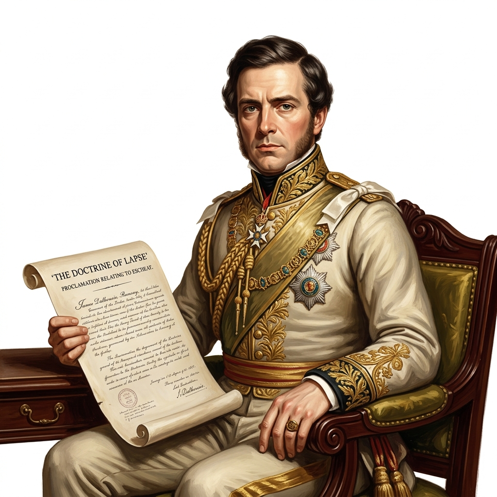
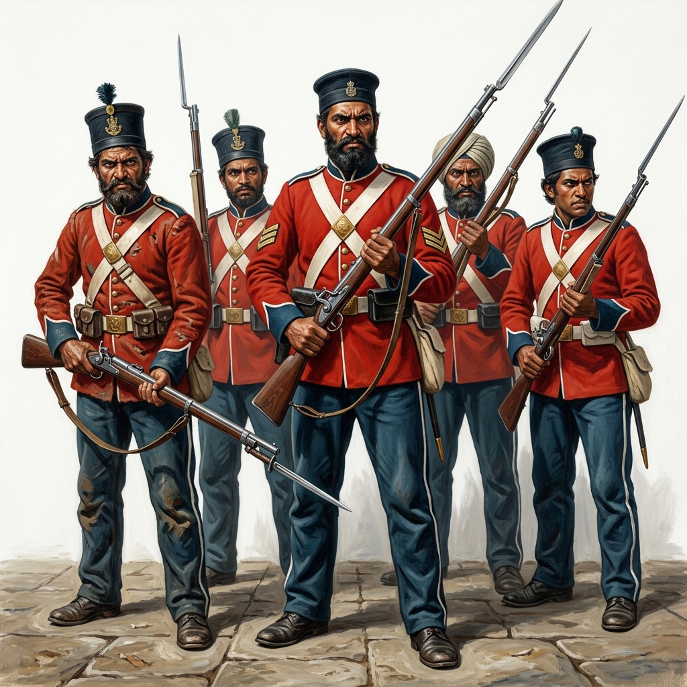
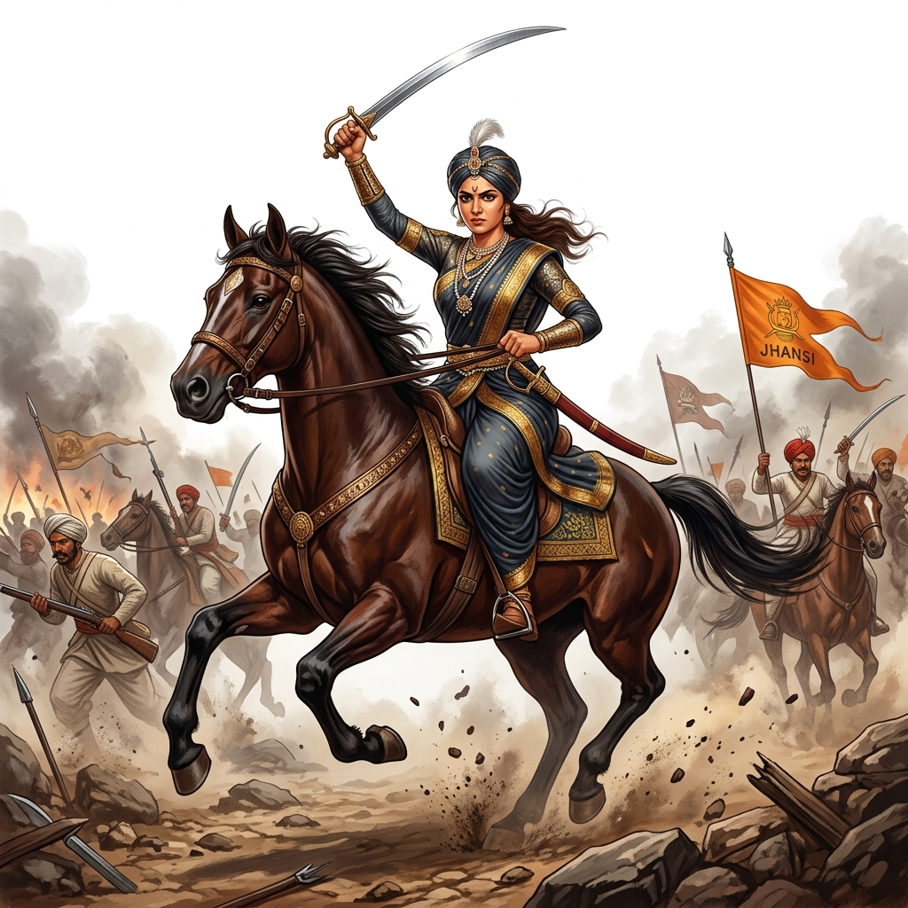
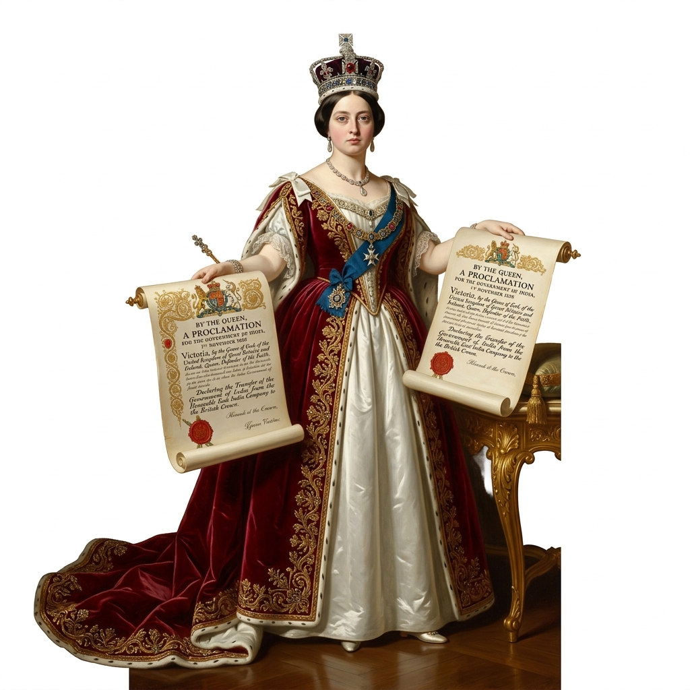

Vardaan Learning Institute
ICSE Class 10 History • Chapter Notes
🌐 vardaanlearning.com
📞 9508841336
Team Vardaan ❤️
The First War of Independence, 1857
Syllabus Focus
Strict ICSE Guidelines: You will ONLY be tested on the Causes (Political, Socio-religious, Economic, and Military) and the Consequences (Changes in administration, Queen Victoria's Proclamation, Relations with Princely States, and Changes in the Army). The actual events are mentioned only to provide narrative continuity.
The Revolt of 1857 shook the very foundations of the British Empire in India. Known as the Sepoy Mutiny by the British and the First War of Independence by Indian historians (like V.D. Savarkar), it was a culmination of 100 years of exploitative British policies following the Battle of Plassey (1757).
1. Causes of the First War of Independence
The outbreak in 1857 was not merely a mutiny by the soldiers; it was driven by deep-rooted resentment across all sections of Indian society.
A. Political Causes
The British East India Company rapidly expanded its territories using aggressive policies, creating fear and suspicion among Indian rulers.

British Governor General Lord Dalhousie holding a document representing the Doctrine of Lapse.
- Policy of Expansion: The British expanded their empire using four methods: outright wars, Subsidiary Alliance (Lord Wellesley), using the pretext of alleged misrule, and the Doctrine of Lapse.
- The Doctrine of Lapse (Lord Dalhousie): If an Indian ruler died without a natural, biological male heir, his kingdom would "lapse" into the hands of the British East India Company. Adopted sons were not recognized as heirs.
- Victims: Jhansi (Rani Lakshmi Bai), Satara, Jaitpur, Sambalpur, Udaipur, and Nagpur.
- Disrespect to Bahadur Shah Zafar: Lord Dalhousie announced that the successors of the Mughal Emperor would have to vacate the historic Red Fort. Later, Lord Canning announced that Bahadur Shah's successors would not be allowed to use the imperial title 'King'. This deeply hurt the sentiments of the Muslims.
- Treatment of Nana Saheb: Nana Saheb, the adopted son of the exiled Peshwa Baji Rao II, was refused the pension his father had received. This forced him to turn against the British (he led the revolt from Kanpur).
- Annexation of Awadh (Oudh): On the pretext of "misgovernance" or alleged misrule, Lord Dalhousie annexed Awadh in 1856. Nawab Wajid Ali Shah was exiled. This angered the sepoys, as a large portion of the Bengal Army was recruited from Awadh.
B. Socio-Religious Causes
The British increasingly interfered in the social customs and religious practices of Indians, leading to a fear that they were trying to forcibly convert everyone to Christianity.
- Interference in Social Customs: Reforms such as the Abolition of Sati (1829), the legalization of Widow Remarriage (1856), and the opening of Western education for girls were seen by orthodox Indians as a direct attack on Hindu traditions.
- Fear of Mass Conversion: The activities of Christian missionaries, who openly criticized Hindu and Islamic teachings, caused alarm. The teaching of Christian doctrines became mandatory in missionary-run educational institutions.
- The Religious Disabilities Act of 1850: This act modified Hindu customs by allowing a convert from Hinduism to Christianity to inherit ancestral property. Indians saw this as a massive incentive and conspiracy to promote conversions.
- Introduction of Western Education & Technologies: The shift to English medium education and the introduction of railways and telegraphs were viewed with suspicion. People feared that railways (where all castes sat together) were designed to break the caste system.
- Taxing Religious Places: The British began taxing lands belonging to temples and mosques, which had traditionally been tax-free.
C. Economic Causes
The British economic policies completely drained India's wealth and destroyed its traditional economy.
- Exploitation of Peasantry: Harsh land revenue systems (like the Zamindari, Ryotwari, and Mahalwari systems) demanded heavy taxes. Peasants were forced to borrow from local moneylenders, eventually losing their lands when they couldn't repay.
- Ruin of Artisans and Handicrafts: The British flooded the Indian market with cheap, machine-made goods produced in English factories. Meanwhile, heavy duties were placed on Indian goods exported to Britain. This completely collapsed the traditional Indian handicraft industry.
- Economic Drain: India’s wealth was systematically siphoned off to England in the form of salaries, pensions of British officers, and profits made by British merchants.
- Impoverishment of the Zamindars: Thousands of Zamindars and landlords lost their lands and estates when they failed to produce title deeds (the Inam Commission of 1852 confiscated over 20,000 estates).
- Loss of Livelihoods: The annexation of princely states left thousands of soldiers, officials, artists, and scholars unemployed.
D. Military Causes
The sepoys (Indian soldiers) formed the bulk of the British army in India, but they were deeply dissatisfied.
- Ill-Treatment and Discrimination: Indian soldiers were paid much less than British soldiers and had fewer chances for promotion. No Indian could rise above the rank of Subedar.
- General Service Enlistment Act (1856): This act required all new Indian recruits to serve overseas if needed. According to orthodox Hindu belief at the time, crossing the sea meant a loss of caste and religion.
- Disparity in Numbers: The ratio of Indian to British soldiers was nearly 6:1. This gave the sepoys confidence that if they rebelled together, the British could be defeated.
- Loss of Foreign Allowance (Bhatta): The British refused to pay the extra allowance (Bhatta) to sepoys when they were sent to fight in distant, newly annexed territories like Sindh and Punjab.
The Immediate Cause

Indian sepoys in 1857 holding Enfield rifles, looking rebellious.
In 1856, the British introduced the new Enfield Rifle. To load the rifle, the soldiers had to bite off the end of a greased cartridge. A strong rumor spread that the grease used was made of cow fat (sacred to Hindus) and pig fat (forbidden for Muslims). Both Hindu and Muslim sepoys felt this was a deliberate plot to defile their religion, sparking the immediate mutiny.
2. Course of the Revolt (Narrative Overview)
(Note: You will not be directly tested on specific dates/battles, but this provides context).

Rani Lakshmi Bai of Jhansi on horseback during the 1857 revolt, holding a sword high.
March 29, 1857 — Barrackpore
Mangal Pandey, a sepoy, refused to use the greased cartridges and attacked a British officer. He was subsequently hanged.
May 10, 1857 — Meerut
Sepoys broke open the jail, released their comrades, killed British officers, and marched to Delhi.
May 11, 1857 — Delhi
The sepoys captured Delhi and proclaimed the aging Mughal Emperor Bahadur Shah Zafar as the Emperor of India.
Major Centers of Revolt
Kanpur: Led by Nana Saheb and Tantia Tope.
Lucknow: Led by Begum Hazrat Mahal.
Jhansi: Led by Rani Lakshmi Bai.
Suppression
The British, with superior weapons and organization, gradually recaptured Delhi. Bahadur Shah Zafar was exiled to Rangoon. Rani Lakshmi Bai died fighting. By 1858, the revolt was completely crushed.
3. Consequences of the First War of Independence
Though the revolt failed to overthrow the British, it fundamentally changed how India was governed.
A. End of Company Rule (Changes in Administration)
- The most significant consequence was the passing of the Government of India Act, 1858.
- The rule of the British East India Company was completely abolished. The power to govern India was transferred directly to the British Crown (Queen Victoria).
- A new British cabinet minister, the Secretary of State for India, was appointed. He was assisted by a 15-member India Council.
- The Governor-General of India was given the new title of Viceroy (meaning the personal representative of the Crown). Lord Canning became the first Viceroy of India.
B. Queen Victoria’s Proclamation (1858)

Queen Victoria holding a royal proclamation scroll in 1858.
On November 1, 1858, Lord Canning read out Queen Victoria’s Proclamation at a grand Darbar in Allahabad. It made the following promises to Indians:
- Religious Freedom: The British promised not to interfere in the religious beliefs and customs of the Indian people.
- Equal Opportunities: Indians were promised equal protection of the law and equal opportunities to enter government services based on merit, irrespective of race or religion.
- General Amnesty: Pardon was granted to all rebels who had not been directly involved in the murder of British subjects.
C. Relation with Princely States
- End of Annexation: The infamous Doctrine of Lapse was abandoned. The British realized that the loyal princes had acted as "breakwaters" during the storm of the revolt.
- Right to Adopt: Indian rulers were given the right to adopt heirs.
- Treaties Honored: The British Crown promised to honor all treaties and agreements previously made by the East India Company with the Indian princes.
- In return, the princes were required to acknowledge the British Crown as the supreme sovereign (paramount power).
D. Changes in the Army
To prevent another mutiny, the British drastically reorganized the Indian Army based on the principle of "divide and rule."
- Increased European Presence: The proportion of British soldiers to Indian soldiers was drastically increased (usually 1:2 in Bengal, and 1:3 in Madras/Bombay).
- Control of Artillery: All crucial military departments, such as the artillery and the main arsenals, were kept exclusively in the hands of British soldiers. No Indian was allowed near the artillery.
- Discrimination by Caste/Region: The army was organized on a caste and regional basis to prevent unity among soldiers. Units were mixed with different castes so they could not unite against the British.
- Shift in Recruitment: The British stopped recruiting from regions like Awadh and Bihar (who led the revolt) and instead recruited heavily from the "martial races" like Sikhs, Gurkhas, and Pathans, who had helped the British suppress the revolt.
Board Exam Tip
In 10 years of ICSE papers, questions consistently ask you to state exactly two or three points under a specific heading (e.g., "State any three political causes," or "Mention two changes made to the army"). Memorize at least 3 strong points for every sub-heading provided in these notes.